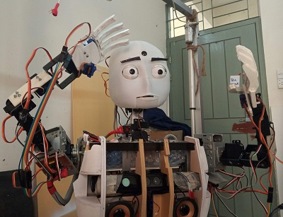
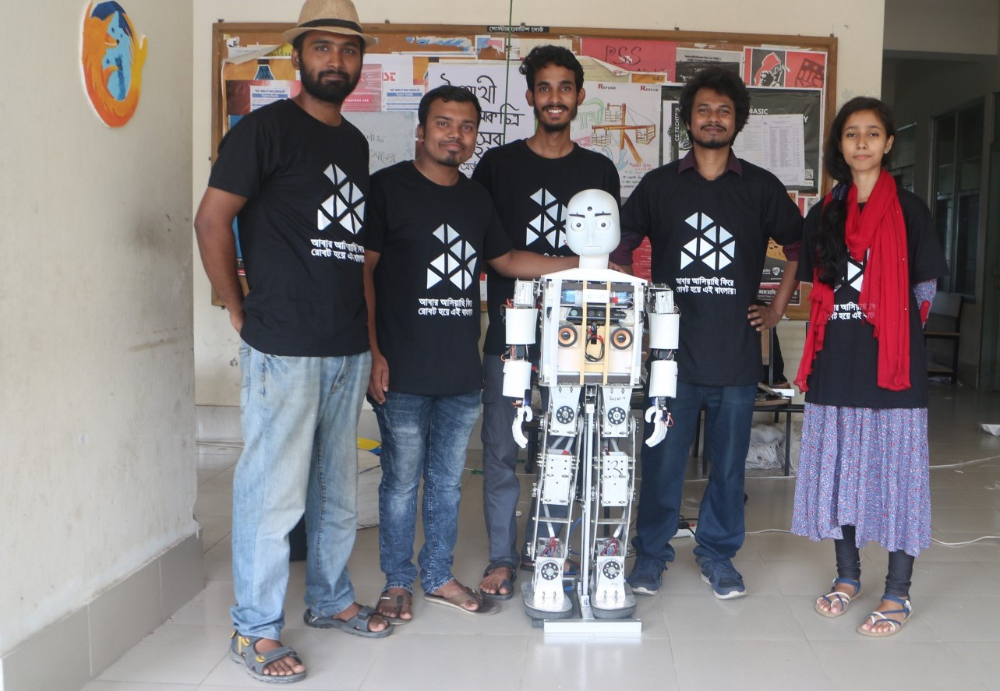
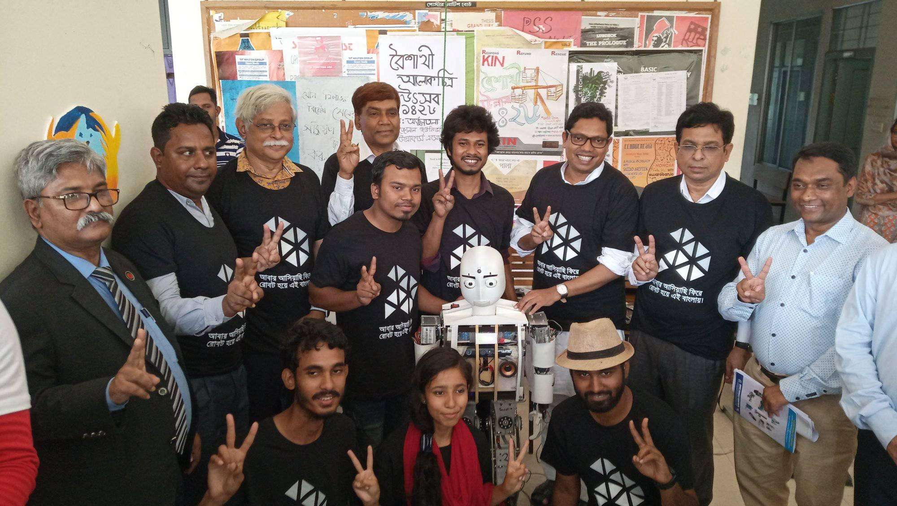

| Accomplishment: I worked with a group of robot enthusiasts people and this is our second development of its kind to make a biped walking social humanoid robot after Ribo. Besides it walkability, we added voice recognition, conversation AI for short conversation, face recognition and we tried to make it as the robot we dreamed of. Additionally, we developed a drag-and-drop visual motion generator for the hands to make animatronic behaviour. | |||||
|
Interesting fact:
This robot can respond to voice commands and performs animatronic behavior. It looks like a live artificial being because of it's facial gestures but it still lacks something which is the ability to perceives our human world and behave intelligently. We realized we need to focus more on perception, navigation, HRI so that one day it really can be a helpful robot to live in our workspace and support us in daily activities.
Specification: DOF: Total 34 ( Two arms=8x2=16, Two legs=5x2=10, Head=8) CPU: Intel® NUC, Core-i5, 8GB RAM Sensor: Kinect, Camera, Proximity Height: 4 feet 3 inch Weight: 30 KG Features: Biped Walk, Voice recognition, Conversation AI, Hand motion Platform: ROS |
 |
||||
| Challenges: We had to face a lot of challenges related to hardware because necessary hardware components were not available in the local market and so we had to work with hobby servos (which doesn't have force/torque feedback) and controlling them for such a big dynamic system was a daunting task. We designed custom hardware to house all the equipment. We developed a kinematics solution for the legs and have to heavily patch footstep planners to make it work with this custom hardware. | |||||
The Team Team Lead and Programmer: Noushad Sojib Design: Mehedi Hasan Rupok AI: Zinia Sultana Joti Mechanical, Electronics: Saiful Islam, Sajid Hasan, Samiul Hasan Supervisor: Dr. M. Zafar Iqbal |
 |
||||
